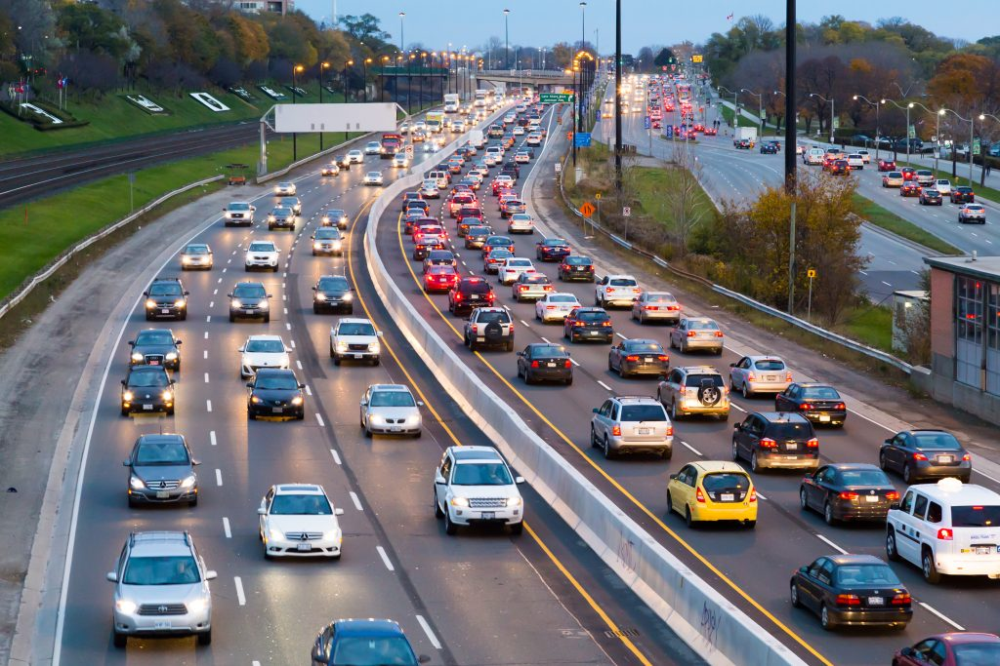
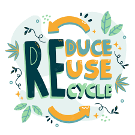
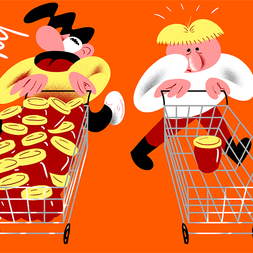

Use recycle bags more than plastic.By using lesser plastic bags, you can reduce the amount of plastic being thrown into the ocean. This will reduce the polution rate by a significant amount if everyone can do the same. Our waters will also be less dangerous not only to sea life but to us humans as the plastic may be contaminated or dirty which would affect the water quality as well.
Take transportation only when necessary.Cutting down on unnecessary transportation will decrease the amount of fumes being let out into the atmosphere to bring you from point A to B. If the distance is not unreasonably far, you could try walking or cycling there to cut down on the fumes. This will help our ozone layer by prolonging the life of it.
Reduce, Reuse and Recycle more often.Reducing the amount of waste you produce you can help save the pollution in the ocean, because your waste does not magically disappear but actually goes directly into the ocean.
Reusing can also help reduce the waste and also give a alternate solution to an issue you might be having for example an old food jar being a container for something in your room.
Recycling is the third way of reducing the waste produced by giving the factories materials to use again in their production line to make new products. That prevents new materials being needed and preventing more waste being dumped in the ocean.
Buy only what is needed.Buying only what you require is a way of reducing. You can reduce the amount of waste you produce because you have less product to begin with. You also reduce the chance of wasting food items because you do not have extra.
- I want to reduce the amount of plastic usage I currently have. Either by using less plastic products like non-reusable plastic bottles and plastic straws or bringing more recycle bags to reduce the amount of plastic bags I need. I could also reuse the plastic bags for future use instead of bringing home once then throwing it away.
- I want to reduce my food wastage and reduce the amount of food I buy. I will start to plan the amount of food I actually need to buy instead of mindlessly ordering food. This will help me prevent wasted food because I ordered too much. I can also try to find a different use for the food I cannot finish so that the food will not just go into the trash and into the landfills.
- I want to help raise awareness about our Earth's condition and health. I can inform my friends and family on the current state of our Earth and tell them what they can do to help. I can also join different groups and events that aim to do this to provide support and manpower. By spreading more awareness maybe more people will join and we can make a proper change for Earth and its livelihood